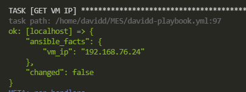

2021-07-05
David CLÉMENT
09.72.37.73.73 - 07.61.04.94.46
Formation de 35H du 5 au 9 Juillet 2021.
Ces comptes font partie du groupe Sudo
Un compte sur le vcenter : vcsa.formation.lan. Même login/mdp que précédemment.
Un template de VM DebTemplate possédant un compte dawan (mot de passe dawan) faisant partie des sudoers.
Créer une clé SSH (RSA, 2048 bits) sur le contrôleur Ansible
Créer un dépôt local git. Et versionner les différentes étapes playbook/roles.
Ecrire un playbook Ansible :
- name: Ajout groupe de ports
vmware_portgroup:
hostname: "{{vcenter_hostname}}"
username: "{{vcenter_username}}"
password: "{{vcenter_password}}"
validate_certs: no
cluster_name: "{{cluster_name}}"
switch: "{{vSwitch_name}}"
portgroup: "VLAN-{{prenom}}"
vlan_id: "{{vlan_id}}"
state: present
delegate_to: localhostRésultat:
- name: CREATE TAG
vmware_tag:
hostname: "{{vcenter_hostname}}"
username: "{{vcenter_username}}"
password: "{{vcenter_password}}"
validate_certs: no
category_id: "{{tag_category_id}}"
tag_name: "{{tag_name}}"
tag_description: "{{tag_description}}"
state: present
delegate_to: localhostRésultat:

Créer une VM Debian 10 à partir du template fourni ‘DebTemplate’(login/mdp : dawan/dawan). Vous la nommerez avec un suffixe : eg “Deb-davidc”
Tagguer la VM avec votre tag
Modifier l’attribut personnalisé DateCreation avec la date du jour (celle du jour de l’exécution du playbook).
Modifier la configuration de la VM pour la déclarer avec un OS correct: Debian 10 (erreur de création du template ;). Cela correspond à la mise à niveau du matériel virtuel.
Ajouter une interface réseau de type VMxNet3 sur le groupe port précédemment créé “VLAN-davidc”
- name: ADD VMXNET3
vmware_guest_network:
validate_certs: no
name: "{{vm_name}}"
gather_network_info: true
networks:
- name: "VM Network"
state: present
device_type: vmxnet3
- state: new
name: "VLAN-{{prenom}}"
device_type: vmxnet3
when: (info.instance.hw_eth1 is not defined)
tags: vm, customization, networkRésultat:
Redimensionner le disque à 5G.
Allumer la VM
Récupérer l’IPv4 de la VM dans un fait Ansible(fact)
Résultat:

- name: COPY SSH-KEY
block:
- name: mkdir .ssh
file:
path: "/home/{{vcenter_username}}/.ssh"
state: directory
- name: touch authorized_keys
file:
path: "/home/{{vcenter_username}}/.ssh/authorized_keys"
state: touch
- name: push key.pub
lineinfile:
path: "/home/{{vcenter_username}}/.ssh/authorized_keys"
line: "{{pubkey}}"
tags: ssh, secu
- name: Create VMs Group
add_host:
hostname: "{{vm_ip}}"
ansible_inventory: "{{vm_name}}"
ansible_user: "{{ansible_username}}"
ansible_password: "{{ansible_user_password}}"
host_key_checking: false
groups:
- "New_VM"
tags: always
- name: inv
debug:
verbosity: 1
var: groups
- name: Gather SSH host key
shell: "ssh-keyscan {{vm_ip}} >> ~/.ssh/known_hosts"
tags: ssh
- name: "Acte 2"
hosts: "New_VM"
connection: ssh
gather_facts: yes
tasks:
- name: Include New_VM vars
include_vars: New_VM.yml
tags: always
- name: DEBUGGING
debug:
var: vm_ip
var: ansible_username
- name: Acte 2, Scène 1; ssh key copy
ansible.posix.authorized_key:
user: "{{ansible_username}}"
state: present
key: "{{lookup('file', '{{ssh_public_key}}')}}"
Résultat:
davidd@ubansible:~/MES$ ssh dawan@192.168.76.24
Linux debtemplate 4.19.0-17-amd64 #1 SMP Debian 4.19.194-2 (2021-06-21) x86_64
The programs included with the Debian GNU/Linux system are free software;
the exact distribution terms for each program are described in the
individual files in /usr/share/doc/*/copyright.
Debian GNU/Linux comes with ABSOLUTELY NO WARRANTY, to the extent
permitted by applicable law.
Last login: Fri Jul 9 15:11:18 2021 from 192.168.76.74 - name: Create a snapshot
vmware_guest_snapshot:
hostname: "{{ vcenter_hostname }}"
username: "{{ vcenter_username }}"
password: "{{ vcenter_password }}"
datacenter: "{{ esx_datacenter_name }}"
folder: "/{{ esx_datacenter_name }}/vm/"
name: "{{ vm_name }}"
state: present
snapshot_name: snap1
description: snap1_description
delegate_to: localhostRésultat:

resize2fs:==>> PASS
Configurer l’interface réseau précedemment ajoutée de façon pérenne avec la configuration suivante : 10.10.10.20/24
Renommer la VM
Installer les paquets suivants : apache2, mariadb-server, php7.3, php7.3-mysql, zip
Télécharger la dernière version de WordPress : https://fr.wordpress.org/latest-fr_FR.zip
Dézipper l’archive dans /var/www/html
Valider l’installation (requête avec une URL)
Variabiliser ce qui peut l’être (playbook et inventaire)
Créer un role Ansible reprenant le contenu de votre Playbook
ansible-lint playbook.yml
Me remettre un .tar.gz de votre dépôt local git.
taz czf